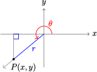

Section 8.4 Chapter Summary and Review
Subsection Key Concepts
Identities are useful for changing from one form to another when solving equations, for simplifying expressions, and for finding exact values for trigonometric functions.
it is not true in general that \(\cos (\alpha + \beta)\) is equal to \(\cos \alpha + \cos \beta\) for all angles \(\alpha\) and \(\beta\text{,}\) or that \(\sin (\alpha + \beta)\) is equal to \(\sin \alpha + \sin \beta\text{.}\)
Sum and Difference of Angles Identities.
\begin{equation*} \cos (\alpha + \beta) = \cos \alpha \cos \beta - \sin \alpha \sin \beta \end{equation*}\begin{equation*} \sin (\alpha + \beta) = \sin \alpha \cos \beta + \cos \alpha \sin \beta \end{equation*}\begin{equation*} \tan (\alpha + \beta) = \dfrac{\tan \alpha + \tan \beta}{1 - \tan \alpha \tan \beta} \end{equation*}\begin{equation*} \cos (\alpha - \beta) = \cos \alpha \cos \beta + \sin \alpha \sin \beta \end{equation*}\begin{equation*} \sin (\alpha - \beta) = \sin \alpha \cos \beta - \cos \alpha \sin \beta \end{equation*}\begin{equation*} \tan (\alpha - \beta) = \dfrac{\tan \alpha - \tan \beta}{1 + \tan \alpha \tan \beta} \end{equation*}Double Angle Identities.
\begin{align*} \cos 2\theta \amp = \cos^2 \theta - \sin^2 \theta \amp\amp \sin 2\theta = 2\sin \theta \cos \theta\\ \amp = 2\cos^2 \theta -1 \amp\amp \tan 2\theta = \dfrac {2\tan \theta}{1-\tan^2 \theta}\\ \amp = 1-2\sin^2 \theta \end{align*}Using one of the calculator keys \(SIN^{-1},~ COS^{-1}\text{,}\) or \(TAN^{-1}\) performs the inverse operation for computing a sine, cosine or tangent.
Two functions are called inverse functions if each "undoes" the results of the other function.
If \(y=f(x)\) is a function, we can often find a formula for the inverse function by interchanging \(x\) and \(y\) in the formula for the function, and then solving for \(y\text{.}\)
The graphs of \(y=f(x)\) and \(y=f^{-1}(x)\) are symmetric about the line \(y=x\text{.}\)
The domain of \(f^{-1}\) is the same as the range of \(f\text{,}\) and the range of \(f^{-1}\) is the same as the domain of \(f\text{.}\)
Horizontal Line Test.
A function passes the Horizontal Line Test if every horizontal line intersects the graph at most once. In that case, there is only one \(x\)-value for each \(y\)-value, and the function is called one-to-one.
A function \(f\) has an inverse function if and only if \(f\) is one-to-one.
Definitions of the inverse trig functions.
\begin{equation*} \sin^{-1}x=\theta~~~\text{if and only if}~~~~\sin \theta = x~~~\text{and}~~~\dfrac{-\pi}{2} \le \theta \le \dfrac{\pi}{2} \end{equation*}\begin{equation*} \cos^{-1}x=\theta~~~\text{if and only if}~~~~\cos \theta = x~~~\text{and}~~~0 \le \theta \le \pi \end{equation*}\begin{equation*} \tan^{-1}x=\theta~~~\text{if and only if}~~~~\tan \theta = x~~~\text{and}~~~\dfrac{-\pi}{2} \lt \theta \lt \dfrac{\pi}{2} \end{equation*}Inverse Trigonometric Functions.
\begin{equation*} \sin(\sin^{-1}x) = x~~~~\text{for}~ -1 \le x \le 1 \end{equation*}\begin{equation*} \cos(\cos^{-1}x) = x~~~~\text{for}~ -1 \le x \le 1 \end{equation*}\begin{equation*} \tan(\tan^{-1}x) = x~~~~\text{for all}~x \end{equation*}However,
\begin{equation*} \sin^{-1}(\sin x)~~\text{may not be equal to}~x \end{equation*}\begin{equation*} \cos^{-1}(\cos x)~~\text{may not be equal to}~x \end{equation*}\begin{equation*} \tan^{-1}(\tan x)~~\text{may not be equal to}~x \end{equation*}The inverse sine function is also called the arcsine function and denoted by \(\arcsin (x)\text{.}\) Similarly, the inverse cosine function is sometimes denoted by \(\arccos (x)\text{,}\) and the inverse tangent function by \(\arctan (x)\text{.}\)
When simplifying expressions involving inverse trigonometric functions, it can often clarify the computations if we assign a name such as \(\theta\) or \(\phi\) to the inverse trig value.
Three More Functions.
If \(\theta\) is an angle in standard position, and \(P(x,y)\) is a point on the terminal side, then we define the following functions.
\begin{equation*} \text{The}~~ \textbf{secant}:~~~~~~ \sec \theta = \dfrac{r}{x} \end{equation*}\begin{equation*} \text{The}~~ \textbf{cosecant}:~~~~ \csc \theta = \dfrac{r}{y} \end{equation*}\begin{equation*} \text{The}~~ \textbf{cotangent}:~~~ \cot \theta = \dfrac{x}{y} \end{equation*}Reciprocal Trigonometric Ratios.
If \(\theta\) is one of the acute angles in a right triangle,
\begin{equation*} \begin{aligned}[t] \sec \theta \amp = \dfrac{\text{hypotenuse}}{\text{adjacent}} \\ \csc \theta \amp = \dfrac{\text{hypotenuse}}{\text{opposite}} \\ \cot \theta \amp = \dfrac{\text{adjacent}}{\text{opposite}} \\ \end{aligned} \end{equation*}
Reciprocal Trigonometric Functions.
\begin{equation*} \text{The}~~ \textbf{secant} ~\text{function}:~~~~~~ \sec \theta = \dfrac{1}{\cos \theta} \end{equation*}\begin{equation*} \text{The}~~ \textbf{cosecant}~\text{function}:~~~~ \csc \theta = \dfrac{1}{\sin \theta} \end{equation*}\begin{equation*} \text{The}~~ \textbf{cotangent}~\text{function}:~~~ \cot \theta = \dfrac{1}{\tan \theta} \end{equation*}We can obtain graphs of the secant, cosecant, and cotangent functions as the reciprocals of the three basic functions.
We can solve equations of the form \(\sec \theta = k\text{,}\) \(\csc \theta = k\text{,}\) and \(\cot \theta = k\) by taking the reciprocal of both sides.
If we know one of the trigonometric ratios for an angle, we can use identities to find any of the others.
Cotangent Identity.
\begin{equation*} \cot \theta = \dfrac{1}{\tan \theta} = \dfrac{\cos \theta}{\sin \theta},~~~~\sin \theta \not=0 \end{equation*}Two More Pythagorean Identities.
\begin{equation*} 1 + \tan^2 \theta = \sec^2\theta~~~~~~~~~~1 + \cot^2\theta = \csc^2 \theta \end{equation*}We can often simplify trigonometric expressions by first converting all the trig ratios to sines and cosines.
Exercises Review Problems
Exercise Group.
For Problems 1–8, answer true or false.
1.
\(\sin \left(\beta + \dfrac{\pi}{4}\right)=\sin \beta + \dfrac{1}{\sqrt{2}}\)
2.
\(\cos \left(\dfrac{\pi}{3} - t\right)=\dfrac{1}{2}-\cos t\)
3.
\(\tan (z-w)=\dfrac{\sin (z-w)}{\cos (z-w)}\)
4.
\(\sin 2\phi = 1 - \cos 2\phi\)
5.
\(\sin \left(\dfrac{\pi}{2}-x\right)=1-\sin x\)
6.
\(\sin (\pi - x)=\sin x\)
7.
\(\cos^2 \alpha - \sin^2 \alpha = -1\)
8.
\(\tan^{-1} s = \dfrac{1}{\tan s}\)
9.
If \(\sin x = -0.4\) and \(\cos x \gt 0,\) find an exact value for \(\cos \left(x + \dfrac{3\pi}{4}\right)\text{.}\)
10.
If \(\cos x = -0.75\) and \(\sin x \lt 0,\) find an exact value for \(\cos \left(x - \dfrac{4\pi}{3}\right)\text{.}\)
11.
If \(\cos \theta = \dfrac{-3}{8},~ \pi \lt \theta \lt \dfrac{3\pi}{2},\) and \(\sin \phi = \dfrac{1}{4},~ \dfrac{\pi}{2} \lt \phi \lt \pi,\) find exact values for
\(\displaystyle \sin (\theta + \phi)\)
\(\displaystyle \tan (\theta + \phi)\)
12.
If \(\sin \rho = \dfrac{5}{6},~ \dfrac{\pi}{2} \lt \rho \lt \pi,\) and \(\cos \mu = \dfrac{-1}{3},~ \dfrac{\pi}{2} \lt \mu \lt \pi,\) find exact values for
\(\displaystyle \cos (\rho - \mu)\)
\(\displaystyle \tan (\rho - \mu)\)
13.
If \(\tan (x + y) =2\) and \(\tan y = \dfrac{1}{3},\) find \(\tan x\text{.}\)
14.
If \(\tan (x - y) =\dfrac{1}{4}\) and \(\tan x = 4,\) find \(\tan y\text{.}\)
Exercise Group.
For Problems 15-16, use the sum and difference formulas to expand each expression.
15.
\(\tan \left(t - \dfrac{5\pi}{3}\right)\)
16.
\(\cos \left(s+ \dfrac{7\pi}{4}\right)\)
Exercise Group.
For Problems 17–18, use the figure to find the trigonometric ratios.

17.
\(\displaystyle \sin \theta\)
\(\displaystyle \cos \theta\)
\(\displaystyle \tan \theta\)
\(\displaystyle \sin 2\theta\)
\(\displaystyle \cos 2\theta\)
\(\displaystyle \tan 2\theta\)
18.
\(\displaystyle \sin \phi\)
\(\displaystyle \cos \phi\)
\(\displaystyle \tan \phi\)
\(\displaystyle \sin 2\phi\)
\(\displaystyle \cos 2\phi\)
\(\displaystyle \tan 2\phi\)
Exercise Group.
For Problems 19–24, use identities to simplify each expression.
19.
\(\sin 4x \cos 5x + \cos 4x \sin 5x\)
20.
\(\cos 3\beta \cos 1.5 - \sin 3\beta \sin 1.5\)
21.
\(\dfrac{\tan 2\phi - \tan 2}{1 + \tan 2\phi \tan 2}\)
22.
\(\dfrac{\tan \dfrac{5\pi}{9} - \tan \dfrac{2\pi}{9}}{1 + \tan \dfrac{5\pi}{9} \tan \dfrac{2\pi}{9}}\)
23.
\(2\sin 4\theta \cos 4\theta\)
24.
\(1-2\sin^2 3\phi\)
Exercise Group.
For Problems 25–26,
Use identities to rewrite the equation in terms of a single angle.
Solve. Give exact solutions between \(0\) and \(2\pi\text{.}\)
25.
\(\cos 2\theta - \sin \theta = 1\)
26.
\(\tan 2z + \tan z = 0\)
Exercise Group.
For Problems 27–28, graph the function and decide if it has an inverse function.
27.
\(f(x) = 4x - x^3\)
28.
\(g(x) = 5 + \sqrt[3]{x - 2}\)
Exercise Group.
For Problems 29–30, give exact values in radians.
29.
\(\displaystyle \tan^{-1}(-\sqrt{3})\)
\(\displaystyle \arccos \left(-\dfrac{1}{2}\right)\)
30.
\(\displaystyle \arcsin (-1)\)
\(\displaystyle \cos^{-1}(-1)\)
31.
An IMAX movie screen is 52.8 feet high.
If your line of sight is level with the bottom of the screen, write an expression for the angle subtended by the screen when you sit \(x\) feet away.
Evaluate your expression for \(x = 20\) feet and for \(x = 100\) feet.
32.
Rembrandt's painting The Night Watch measures 13 feet high by 16 feet wide.
Write an expression for the angle subtended by the width of the painting if you sit \(d\) feet back from the center of the painting.
Evaluate your expression for \(d = 10\) feet and for \(d = 25\) feet.
Exercise Group.
For Problems 33–34, solve for \(\theta\text{.}\)
33.
\(v_y = v_0\sin \theta - gt\)
34.
\(\Delta W = -q_0 E\cos (\pi - \theta)\Delta l\)
Exercise Group.
For Problems 35–36, find exact values without using a calculator.
35.
\(\cos\left[\tan^{-1}\left(\dfrac{-\sqrt{5}}{2}\right)\right]\)
36.
\(\tan\left[\sin^{-1}\left(\dfrac{2}{7}\right)\right]\)
Exercise Group.
For Problems 37–38, simplify the expression.
37.
\(\sin(\cos^{-1}2t)\)
38.
\(\tan(\cos^{-1}m)\)
39.
Explain why one of the expressions \(\sin^{-1}x\) or \(\sin^{-1}\left(\dfrac{1}{x}\right)\) must be undefined.
40.
Does \(\sin^{-1}(-x) = -\sin^{-1}(x)\text{?}\) Does \(\cos^{-1}(-x) = -\cos^{-1}(x)\text{?}\)
Exercise Group.
For Problems 41–42, evaluate. Round answers to 3 decimal places if necessary.
41.
\(\displaystyle \csc 27\degree\)
\(\displaystyle \sec 108\degree\)
\(\displaystyle \cot 245\degree\)
42.
\(\displaystyle \csc 5.3\)
\(\displaystyle \cot 0.98\)
\(\displaystyle \sec 2.17\)
Exercise Group.
For Problems 43–50, find all six trigonometric ratios for the angle \(\theta\text{.}\)
43.

44.

45.

46.

47.

48.

49.
\(6\cos \alpha = -5\text{,}\) \(~ 180\degree \lt \alpha \lt 270\degree\)
50.
\(4\sin \theta = 3,~ \theta\) is obtuse
Exercise Group.
For Problems 51–56, write algebraic expressions for the six trigonometric ratios of the angle.
51.

52.

53.

54.

55.
\(2\sin \alpha - k = 0,~\dfrac{\pi}{2} \lt \alpha \lt \pi\)
56.
\(h\cos \beta - 3 = 0,~\dfrac{3\pi}{2} \lt \beta \lt 2\pi\)
Exercise Group.
For Problems 57–58, find all six trigonometric ratios of the arc \(\theta\text{.}\) Round to two places.
57.

58.

Exercise Group.
For Problems 59–62, evaluate exactly.
59.
\(4\cot \dfrac{3\pi}{4} - \sec^2 \dfrac{\pi}{3}\)
60.
\(\dfrac{1}{2}\csc \dfrac{2\pi}{3} + \tan^2 \dfrac{5\pi}{6}\)
61.
\(\csc \dfrac{7\pi}{6}\cos \dfrac{5\pi}{4}\)
62.
\(\sec \dfrac{7\pi}{4}\cot \dfrac{4\pi}{3}\)
Exercise Group.
For Problems 63–64, find all solutions between \(0\) and \(2\pi\text{.}\) Round your solutions to tenths.
63.
\(3\csc \theta + 2 = 12\)
64.
\(5\cot \theta + 15 = -3\)
Exercise Group.
For Problems 65–70, sketch a graph of each function. Then choose the function or functions described by each statement.
65.
The graph has vertical asymptotes at multiples of \(\pi\text{.}\)
66.
The graph has a horizontal asymptote at \(\dfrac{\pi}{2}\text{.}\)
67.
The function values are the reciprocals of \(y = \cos x\text{.}\)
68.
The function is defined only for \(x\)-values between \(-1\) and \(1\text{,}\) inclusive.
69.
None of the function values lie between \(-1\) and \(1\text{.}\)
70.
The graph includes the origin.
Exercise Group.
For Problems 71–74,
Graph the function on the interval \(-2\pi \le\ x \le 2\pi\text{,}\) and use the graph to write the function in a simpler form.
Verify your conjecture algebraically.
71.
\(f(x)=\tan x(\cos x - \cot x)\)
72.
\(g(x)=\csc x - \cot x\cos x\)
73.
\(G(x) = \sin x(\sec x - \csc x)\)
74.
\(F(x) = \dfrac{1}{2}\left(\dfrac{\cos x}{1+\sin x} + \dfrac{1+ \sin x}{\cos x}\right)\)
Exercise Group.
For Problems 75–78, simplify the expression.
75.
\(1-\dfrac{\sin x}{\csc x}\)
76.
\(\dfrac{\sin x}{\csc x}+\dfrac{\cos x}{\sec x}\)
77.
\(\dfrac{2+\tan^2 B}{\sec^2 B} - 1\)
78.
\(\dfrac{\csc t}{\tan t + \cot t}\)
Exercise Group.
For Problems 79–82, use the suggested substitution to simplify the expression.
79.
\(\dfrac{\sqrt{16+x^2}}{x},~~x = 4\tan \theta\)
80.
\(x\sqrt{4-x^2},~~x=2\sin \theta\)
81.
\(\dfrac{x^2 - 3}{x},~~x=\sqrt{3}\sec \theta\)
82.
\(\dfrac{x}{\sqrt{x^2+2}},~~x=\sqrt{2}\tan \theta\)
83.
This problem outlines a geometric proof of difference of angles formula for tangent.
-
In the figure below left, \(\alpha=\angle ABC\) and \(\beta = \angle DBC\text{.}\) Write expressions in terms of \(\alpha\) and \(\beta\) for the sides \(AC,~DC,\) and \(AD\text{.}\)

In the figure above right, explain why \(\triangle ABC\) is similar to \(\triangle FBE\text{.}\)
Explain why \(\angle FDC = \alpha\text{.}\)
Write an expression in terms of \(\alpha\) and \(\beta\) for side \(CF\text{.}\)
Explain why \(\triangle FBE\) is similar to \(\triangle ADE\text{.}\)
Justify each equality in the statement
\begin{equation*} \tan (\alpha - \beta) = \dfrac{DE}{BE} = \dfrac{AD}{BF} = \dfrac{\tan \alpha - \tan \beta}{1+\tan \alpha \tan \beta} \end{equation*}
84.
Let \(L_1\) and \(L_2\) be two lines with slopes \(m_1\) and \(m_2\text{,}\) respectively, and let \(\theta\) be the acute angle formed between the two lines. Use an identity to show that
Exercise Group.
For Problems 85–86, use the fact that if \(\theta\) is one angle of a triangle and \(s\) is the length of the opposite side, then the diameter of the circumscribing circle is
Round your answers to the nearest hundredth.

85.
In the figure above, find the diameter of the circumscribing circle, the angle \(\alpha\text{,}\) and the sides \(a\) and \(b\text{.}\)
86.
A triangle has one side of length 17cm and the angle opposite is \(26\degree\text{.}\) Find the diameter of the circle that circumscribes the triangle.